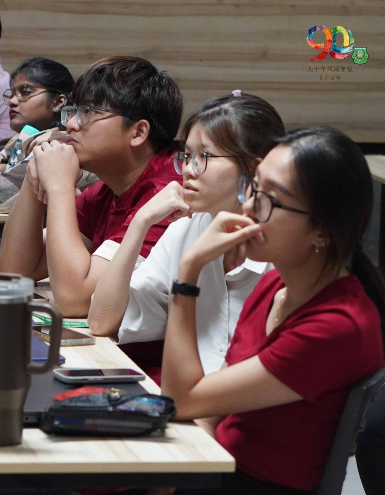
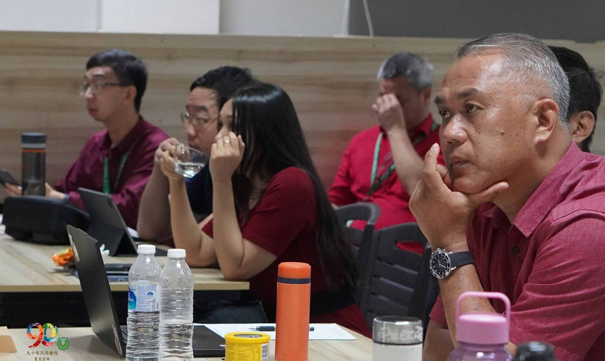
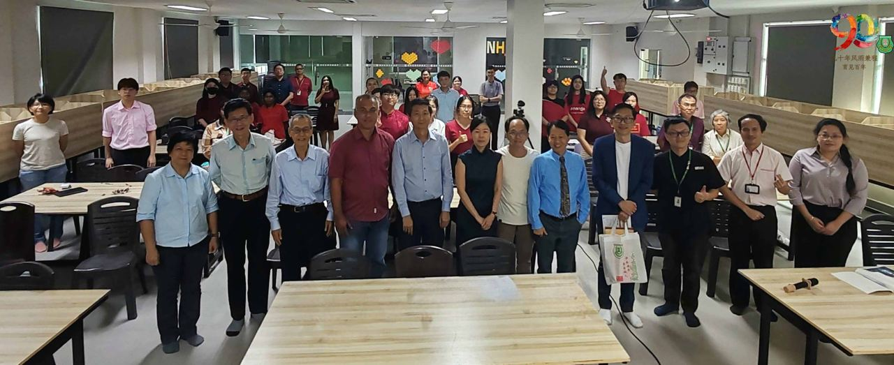
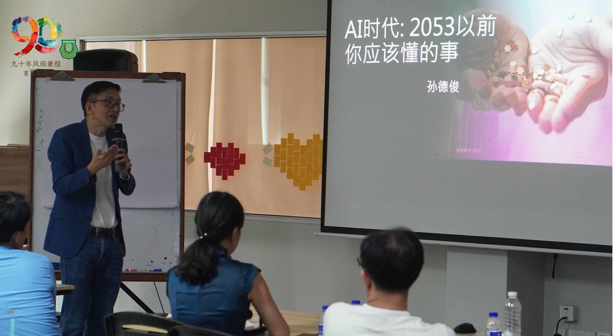
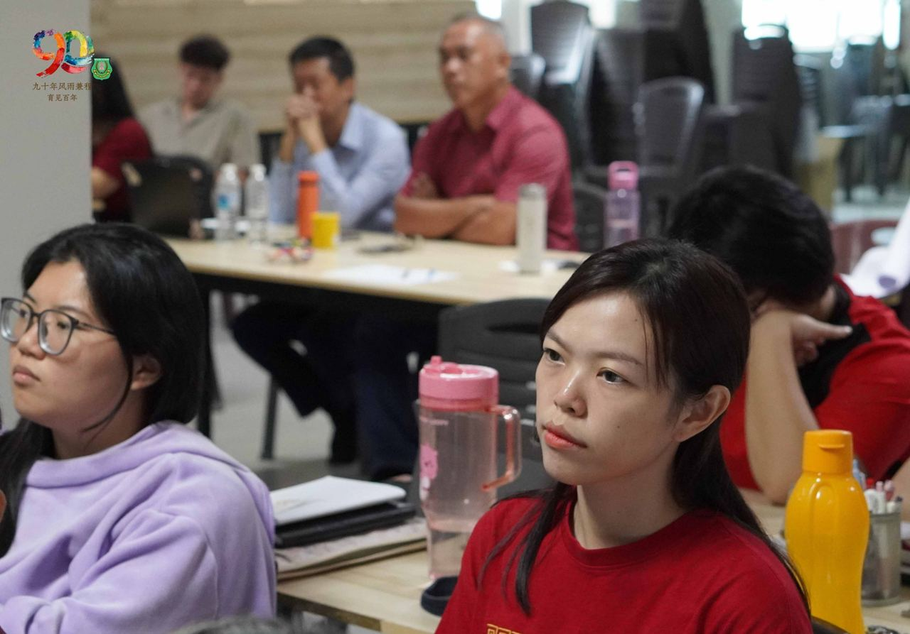
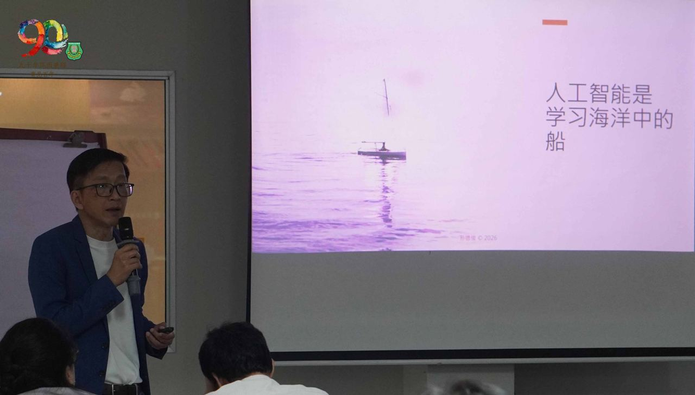
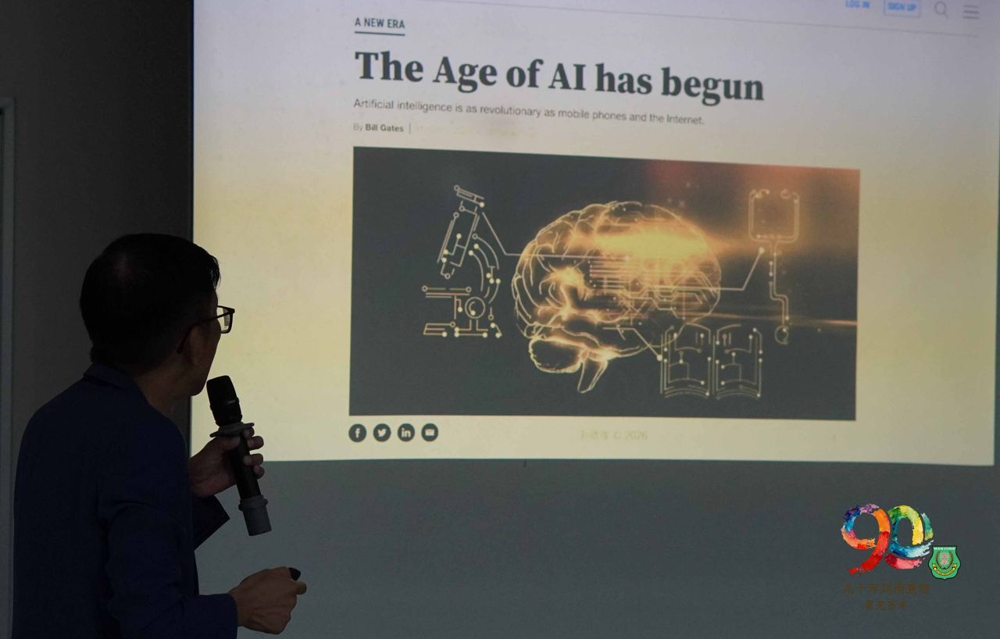
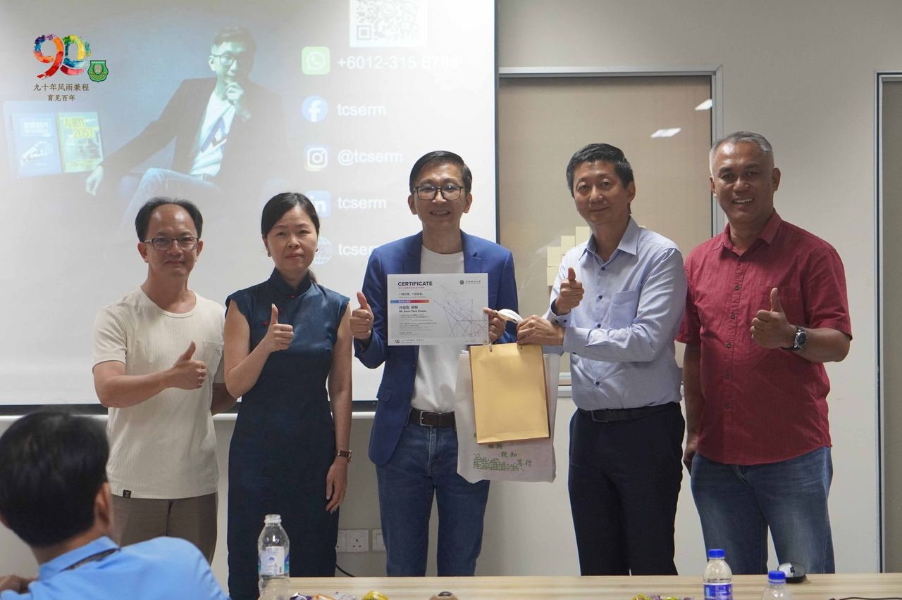

南华独中90周年校庆教育研讨会系列报道之二
南华独中90周年校庆教育研讨会系列报道之二
思考是永恒的教育叩问
狄更斯说：这是最好的时代，这也是最坏的时代。当这句话从孙德俊老师口中道出，萦绕在南华独中讲堂上空时，在场的每一个教育工作者，心里都落下了同一个重量。
南华独中90周年校庆系列教育研讨会第二场讲座主题为《AI时代：2053以前你应该懂的事》，主讲人孙德俊老师是马来西亚数码协会前主席，长期在《南洋商报》撰写AI科技和商业专栏，亦出版过两部关于数码和AI时代的著作。
孙讲师坦言无意介绍工具，唯独不得不谈的是，教育是一种心态，更是一个时代的抉择。
除本校董事与教师外，本场讲座透过线上报名，吸引了来自各地的教育机构董事长、独中校长以及关心华教的前线教育工作者共聚一堂。
孙老师以一则真实案例揭开讲座序幕：槟城一家博物馆开幕前夕，发现墙上霓虹招牌"POOL OF HAPPINESS"少了一个S，牌子已嵌入墙壁，无法更换。馆主将困境完整告知AI，AI给出的方案出乎所有人意料——把那个"不见的S"设计成藏在博物馆各处的寻宝道具，让访客凭地图逐一寻找，拍照打卡，标上"#FindingHappiness"。一个错误，变成了博物馆最有记忆点的体验。
"传统上你请顾问来解决这个问题，给他一万五千令吉，他可能都想不到。今天，二十美元一个月的工具，帮你把一个错误变成你博物馆的卖点。"孙老师说。这个故事的核心，不在于AI有多神奇，而在于——当你把AI当成思考伙伴，而不是答案机器，它的上限才真正显现。
讲座涵盖AI时代的七大趋势与"2053以前应该懂的十件事"，从提问力、超级个体、AI导师到防范"降智"风险，以宏观框架引导与会者重新丈量时代坐标。其中，AI书僮与灯塔教师的双重隐喻尤令与会者印象深刻：学生在AI的学习海洋中航行，教师，是岸边的灯塔。
瞬时，在场的各位即可明白：教师在AI时代无可取代的，正是判断力、价值观、以及与学生朝夕相处后积累的经验与羁绊、感情与陪伴，这就是老师们应该共筑的护城河。
问答环节，在场一位教师提出了一个迫切而真实的问题：判断力较弱的孩子，在这个AI时代，该何去何从？这一提问，触动了现场所有人。孙老师回应时，再次引用了狄更斯那句话——什么都不做，就是最坏的时代；掌握了脉动，在对的时候做对的事，就是最好的时代。
对于教育工作者而言，这个答案，或许是给每一个孩子的，也是给每一位站在讲台前的大人的。
思考，已在这个讲堂里，悄然开启。
出席者还包括本校董事长颜登逸先生、董事总务何添胜先生、董事副总务林道祥先生。本场讲座透过线上报名，亦吸引了他校董事长、独中校长与教师，以及关心华教的前线教育工作者共襄盛举。







